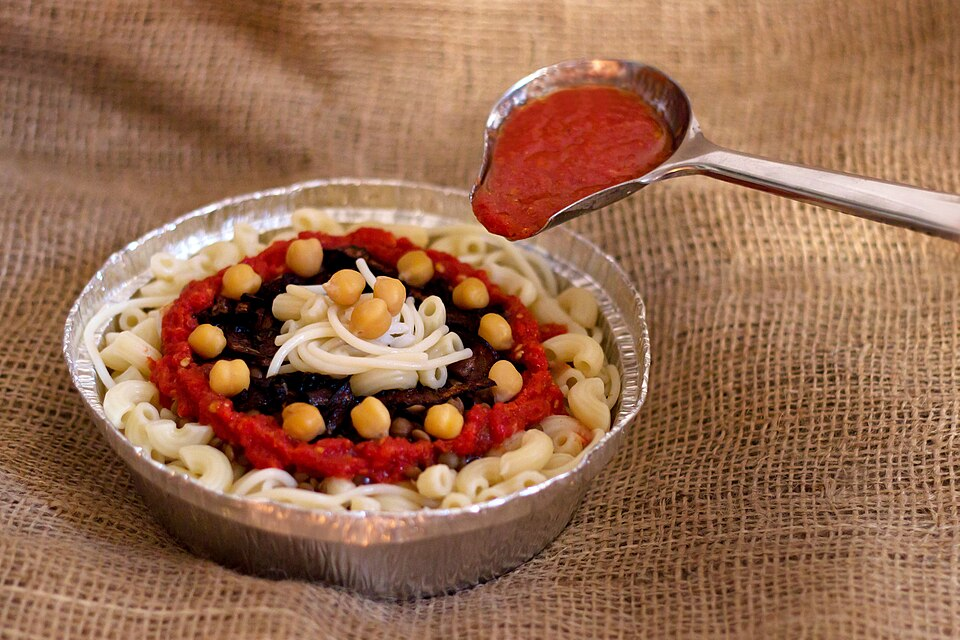
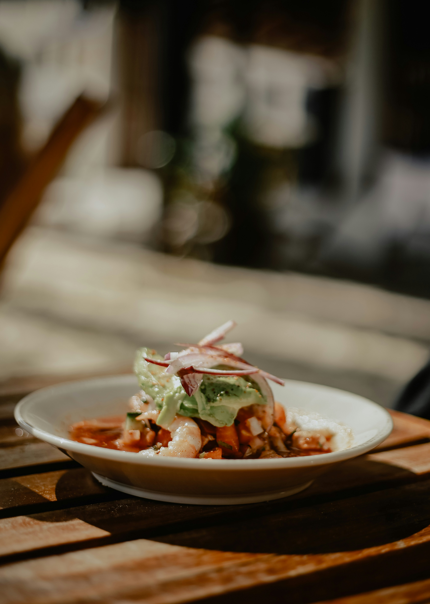

Shakshuka

Eggs gently cooked in a spiced tomato and pepper sauce. Ready in 30 minutes and serves 2–3.
Ingredients
- 2 tablespoons olive oil
- 1 onion, diced
- 1 red bell pepper, diced
- 2 garlic cloves, minced
- 1 teaspoon cumin
- 1 teaspoon paprika
- 1 can (400 g) crushed tomatoes
- 4 eggs
- Salt, pepper, and fresh parsley
Steps
- Heat the olive oil in a pan and cook the onion and pepper until soft.
- Add the garlic, cumin, and paprika and stir for 1 minute.
- Pour in the tomatoes, season with salt and pepper, and simmer for 10 minutes.
- Make 4 small wells in the sauce and crack an egg into each one.
- Cover and cook until the egg whites are set, about 5–7 minutes.
- Top with parsley and serve with bread.
Koshari

Egypt's famous street food: rice, lentils, and pasta topped with a tangy tomato sauce and crispy onions. Takes about 1 hour and serves 4.
Ingredients
- 1 cup brown lentils
- 1 cup rice
- 1 cup small pasta (elbow or ditalini)
- 1 can chickpeas, drained
- 2 onions, thinly sliced
- Vegetable oil for frying
- 1 can (400 g) tomato sauce
- 3 garlic cloves, minced
- 2 tablespoons white vinegar
- 1 teaspoon cumin, salt, and chili flakes to taste
Steps
- Fry the sliced onions in oil until dark golden and crispy, then set aside.
- Boil the lentils until almost tender, then add the rice and cook together until done.
- Boil the pasta separately and drain.
- For the sauce, cook the garlic in a little oil, add the tomato sauce, vinegar, cumin, and salt, and simmer for 10 minutes.
- Layer rice and lentils, pasta, and chickpeas in a bowl.
- Pour the sauce on top and finish with the crispy onions.
Tom Yum Soup

A hot and sour broth with lemongrass, lime leaves, chili, and shrimp that wakes up every taste bud. Ready in 30 minutes and serves 4.
Ingredients
- 1 liter chicken or shrimp stock
- 2 stalks lemongrass, cut into pieces and smashed
- 4 kaffir lime leaves, torn
- 3 slices galangal or ginger
- 2–3 Thai chilies, smashed
- 200 g mushrooms, sliced
- 300 g shrimp, peeled
- 3 tablespoons fish sauce
- 3 tablespoons lime juice
- Fresh cilantro
Steps
- Bring the stock to a boil in a large pot.
- Add the lemongrass, lime leaves, galangal, and chilies and simmer for 5 minutes.
- Add the mushrooms and cook for 3 minutes.
- Add the shrimp and cook until they turn pink, about 2–3 minutes.
- Turn off the heat and stir in the fish sauce and lime juice.
- Taste, adjust the sour and salty balance, and top with cilantro.
Steak with Chimichurri

Flame-grilled beef topped with a punchy sauce of parsley, garlic, oregano, and red wine vinegar. Ready in 30 minutes and serves 2.
Ingredients
- 2 steaks (ribeye or flank), about 250 g each
- 1 cup fresh parsley, finely chopped
- 3 garlic cloves, minced
- 1 teaspoon dried oregano
- 1/2 teaspoon red pepper flakes
- 3 tablespoons red wine vinegar
- 1/2 cup olive oil
- Salt and black pepper
Steps
- Mix the parsley, garlic, oregano, pepper flakes, vinegar, and olive oil in a bowl. Season with salt and let it rest.
- Take the steaks out of the fridge 20 minutes before cooking and season both sides with salt and pepper.
- Heat a grill or heavy pan until very hot.
- Cook the steaks for 3–4 minutes per side for medium-rare.
- Let the steaks rest for 5 minutes, then slice them.
- Spoon the chimichurri over the top and serve.
Shrimp Ceviche

Fresh shrimp "cooked" in lime juice with tomato, onion, cilantro, and avocado. Perfect on a hot day. Ready in 45 minutes and serves 4.
Ingredients
- 500 g raw shrimp, peeled and chopped
- 1 cup fresh lime juice (about 8 limes)
- 2 tomatoes, diced
- 1/2 red onion, finely diced
- 1 jalapeño, finely diced
- 1 avocado, diced
- Handful of fresh cilantro, chopped
- Salt and tortilla chips for serving
Steps
- Put the shrimp in a glass bowl and cover it with the lime juice.
- Cover and refrigerate for 20–30 minutes, until the shrimp turns pink and firm.
- Drain off most of the lime juice.
- Stir in the tomatoes, onion, jalapeño, and cilantro, and season with salt.
- Gently fold in the avocado just before serving.
- Serve cold with tortilla chips.